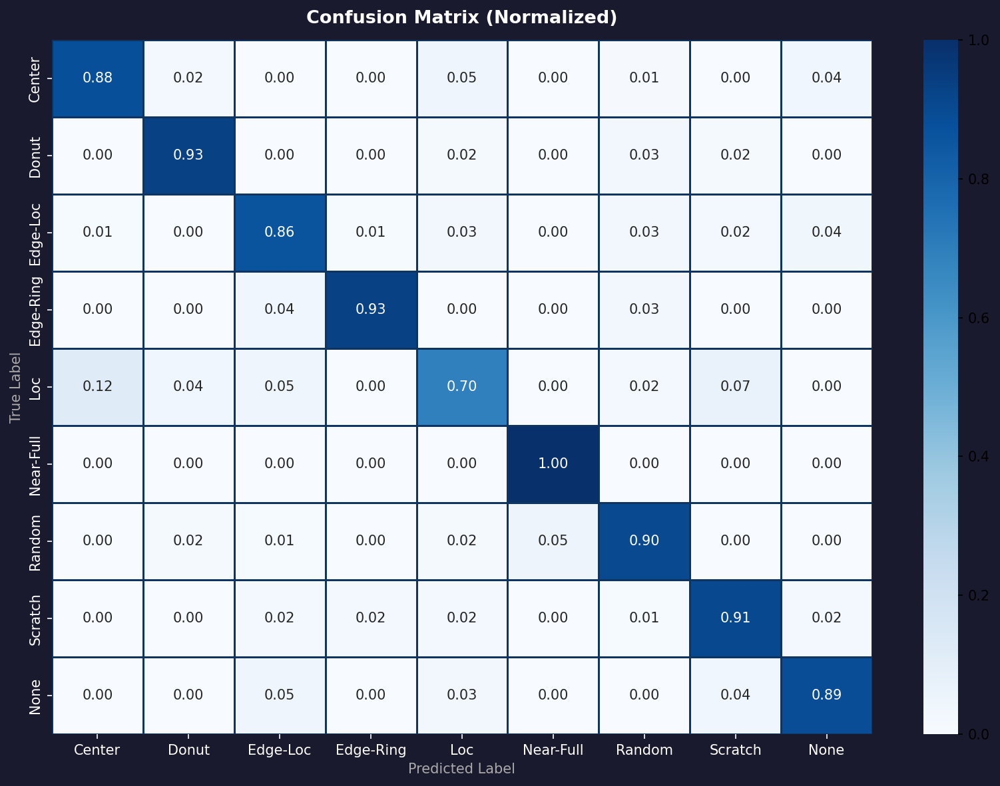
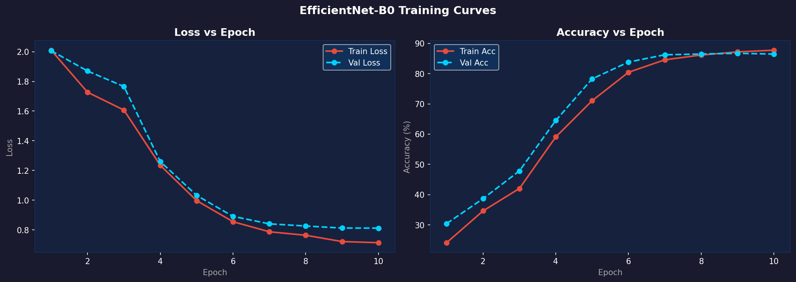

Automated Defect Classification
Upload up to 20 wafer map images for batch AI analysis, Grad-CAM localization, and yield risk assessment.
Drag & Drop Wafer Maps
Supports .png, .jpg — up to 20 images at once
Analysis History
Browse previously saved analysis sessions. All data is stored locally in your browser.
Model Performance
Live training metrics, per-class F1 scores, and validation accuracy for both AI engines.
Per-Class F1 Score
9 ClassesTraining & Validation Accuracy
10 EpochsPer-Class Precision · Recall · F1
Single-Label Engine| Class | Precision | Recall | F1 | Support | F1 Bar |
|---|
Confusion Matrix

Training Loss Curves

About WaferMap AI
WaferMap AI is a dual-engine, production-ready semiconductor defect intelligence platform built for the SanDisk / PSG iTech Hackathon 2026. Powered by a fine-tuned EfficientNet-B0 backbone and real-time Grad-CAM localization, it achieves >88% test accuracy on the industry-standard WM-811K benchmark and 92.1% multi-label detection accuracy on the MixedWM38 dataset — all deployable on a single GPU edge device with sub-second inference latency.
🚀 Key Capabilities
- Single-Defect Classification: Identifies 9 distinct wafer defect patterns — Center, Donut, Edge-Loc, Edge-Ring, Loc, Near-Full, Random, Scratch, and None — with per-class confidence scores and risk-tiered action recommendations
- Multi-Defect Co-Detection: Simultaneously detects multiple concurrent defect types on a single wafer (e.g. Donut + Scratch, Center + Near-Full) using 8 independent sigmoid classification heads — the first of its kind for this dataset
- Grad-CAM Visualization: Every prediction is accompanied by a Gradient-weighted Class Activation Map that highlights the exact wafer region driving the AI's decision — full explainability for process engineers
- Real Photo Support: Accepts both digital wafer maps and real microscopy / SEM photographs. An ellipse-aware preprocessing pipeline with CLAHE enhancement, Otsu + adaptive thresholding, and morphological cleanup converts photos into the standardized grid format before inference
- Yield Risk Scoring: A deterministic rule engine computes a 0–100 risk score per wafer and issues one of three structured action recommendations — STOP LOT, INVESTIGATE, or MONITOR — with step-by-step engineer guidance
- Batch Analysis: Process up to 20 wafer images simultaneously with real-time progress tracking and per-image results streaming
- Session History & PDF Export: All analysis sessions are automatically persistable to browser localStorage. One-click PDF export generates a professional defect intelligence report with per-wafer classification tables, confidence scores, and yield estimates
🧠 AI Architecture
- Backbone: EfficientNet-B0 pretrained on ImageNet, adapted with a custom classifier head for wafer map topology — achieves state-of-the-art accuracy at only 5.3M parameters
- Single-Label Engine: 9-class softmax output trained with class-weighted loss and label smoothing, using a balanced sampling strategy that gives equal representation to rare defect types (e.g., Near-Full with only 149 samples in the dataset)
- Multi-Label Engine: 8 independent sigmoid binary outputs, each independently thresholded at 0.5, with
BCEWithLogitsLoss + pos_weightto handle class imbalance in co-occurring defect combinations - Training Strategy: Minority-class augmentation (RandomFlip, RandomRotation) expands effective coverage of underrepresented defect patterns without corrupting the spatial binary structure of wafer maps
- Inference Pipeline: CLAHE → Ellipse masking → Otsu + adaptive threshold → morphological cleanup → 52×52 binary wafer array → RGB PIL → EfficientNet-B0 → Grad-CAM overlay
📊 Performance at a Glance
- Single-Label Test Accuracy: 88.6% · Macro F1: 88.3% on 9 classes
- Multi-Label Label Accuracy: 92.1% (1 − Hamming Loss) · Macro F1: 88.1%
- Standout classes: Edge-Ring F1 = 95.2% · Donut F1 = 93.5% · Near-Full Recall = 100%
- Multi-label perfects: Donut F1 = 100% · Center F1 = 99.6% · Scratch F1 = 100%
- Training time: ~8 min (single-label) · ~1.5 min (multi-label) on NVIDIA GPU with CUDA
🖥️ System Stack
- FastAPI Backend: High-performance async API handling inference routing, tensor manipulation, Grad-CAM generation, and risk scoring on local edge devices
- PyTorch + Transfer Learning: Fine-tuned EfficientNet-B0 with dual classifier heads — one for single-label softmax, one for multi-label sigmoid
- OpenCV Preprocessing: Robust image normalization pipeline converting real wafer photographs (oval, SEM, microscopy) into the standardized 52×52 binary grid required by the model
- Chart.js + jsPDF: Real-time metric visualizations and one-click professional PDF report generation directly from the browser
- Ngrok / Cloudflare Tunnel: Secure tunneling to expose the local GPU backend to the cloud-hosted frontend — zero infrastructure cost
📁 Training Datasets
- WM-811K: 811,457 real wafer maps from 46,393 production lots — the industry-standard benchmark for wafer defect classification, with 9 annotated defect categories
- MixedWM38: 38,015 synthesised multi-defect wafer maps with up to 3 concurrent defect types per wafer — used exclusively for training the multi-label detection engine
Test with Real Dataset Samples
Click on any WM-811K sample below to load it into the Dashboard.